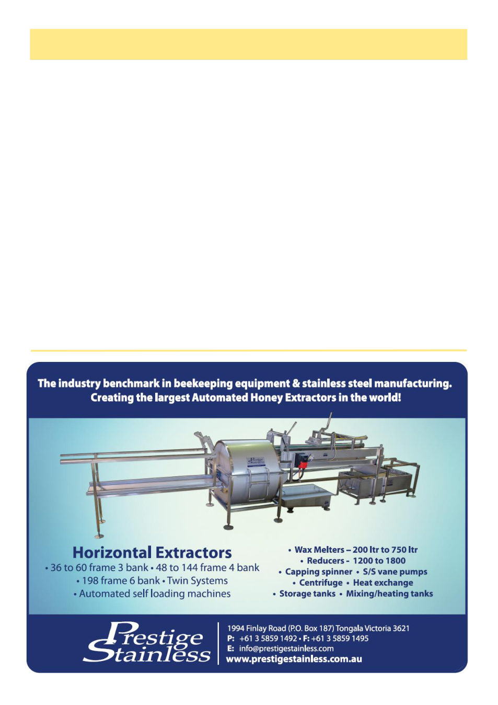

April 2026
17
Season Report, cont’d
be sold to China and India. The companies make more
profit from selling almonds in the shell to those coun-
tries.
Pollination prices being offered at present for Al-
mond pollination are $210 for single hives. Beekeepers
are not happy with this price especially with increased
diesel fuel prices. Many beekeepers are opting for can-
ola crops as it is closer and it appears farmers will be
able to sell the canola seed for bio fuel.
The northern coast of NSW and the Gold Coast have
the best budding on the trees for next season. I am told
that a beekeeper that normally takes 40 truck loads of
bees to the almond pollination will only take 6 loads
this spring as the honey prospects look so good.
In NSW supply of diesel fuel presently is a problem.
I am told by the service station manager that the high
sulphur diesel will damage the motors of vehicles pur-
chased after 2009.
Capilano have increased honey prices to $5 per kilo-
gram and premium honey is $5.50.
The source of the varroa resistant to Bayvarol has
been found and it appears the beekeeper had been using
back-to–back Bayvarol treatments. Unfortunately, re-
cent reports are that a second incursion of varroa may
have occurred and these varroa are resistant to Bayvarol
and Apivar. I just hope that this is not the case as we
need everything to get through the initial stages of in-
fection.
26/3/2026
Five millimetres of rain today and more forecast, it
will freshen up the growth of trees and weeds. After
the past very dry autumns it will be good to see canola
this spring. Overnight a further three millimetres with
very strong winds.
A dairy farmer was telling me that 30 dairy farms
near Nathalia have been purchased by a Canadian su-
perannuation fund and planted to almonds. This will be
the first year they need bees and further expansion is
expected.
Beekeepers visiting from Sydney have said the var-
roa has killed their bees and they cannot see any bees in
their gardens.
The hive scales are consistently reporting that the
bees are only maintaining themselves at present. Only
on very warm days will be a slight increase, otherwise
negative readings. Hive scales are now available for
$1000 plus GST. It is interesting to see that in many
remote areas they can send a message where your mo-
bile phone is unable to work.
The present wintery cold snap is not unusual at this
time of the year. I expect warm weather will return and
possibly into May.
(Continued from page 16)